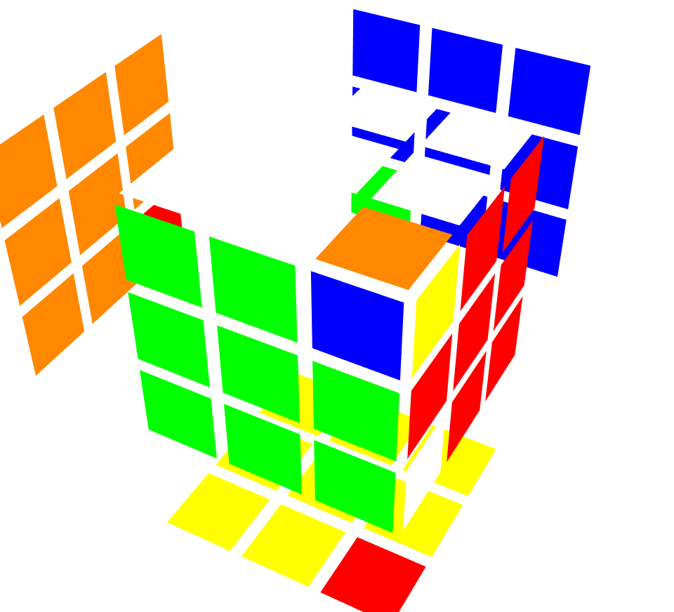
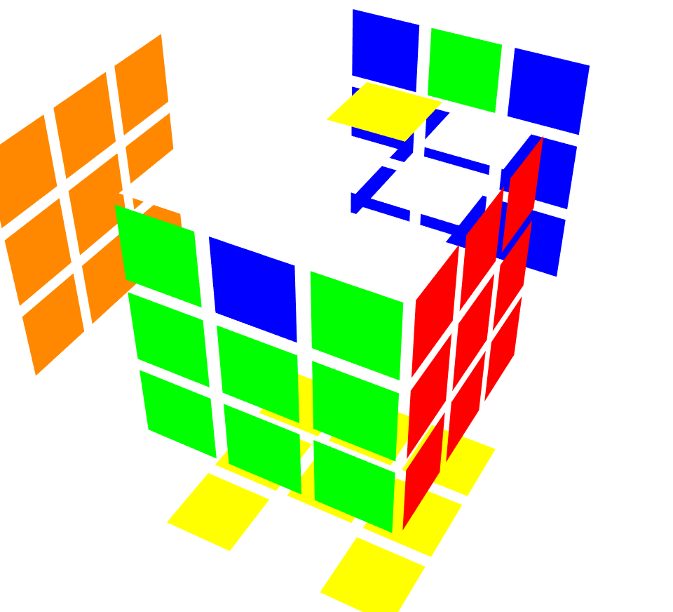

Komutatory
Jak już wcześniej pisałem Kostka Rubika jako grupa jest nieabelowa, czyli nie zachodzi w niej przemienność.
W teorii grup istnieje pojęcie komutatora, który jest wskaźnikiem stopnia nieprzemienności.
Komutator dwóch elementów a i b ∈ G to:
[a,b] = a-1b-1ab
Jeśli grupa jest przemienna to komutator jest równy elementowi neutralnemu grupy grupy np. przy dodawaniu: -1 -2 + 1 + 2 = 0
Dla Kostki Rubika R U R' U' \neq e
Gdzie e to element neutralny, czyli ułożona kostka. Wskazuje to na to, że grupa nie jest przemienna.
Do układania Kostki Rubika można wykorzystywać komutatory. Komutator jak już pisałem to wyrażenie postaci:
[a,b] = a-1b-1ab,
częściej jest jednak oznaczany jako:
[a,b] = aba-1b-1
Weźmy jako a i b pewne sekwencje z Kostki Rubika.
- [R U R', D2] = R U R' D2 R U' R' D2
Wykonuje cykl (RUF DFR DBL)

- [M', U2] = M' U2 M U2
Wykonuje cykl (UF DF UB)

Jak widać komutatory pozwalają ułożyć konkretne elementy na Kostce Rubika, nie psując reszty.
Komutatory są używane przede wszystkim w metodach pozwalających ułożyć kostkę bez patrzenia,
ponieważ układają konkretne elementy, nie wpływając na resztę układanki.